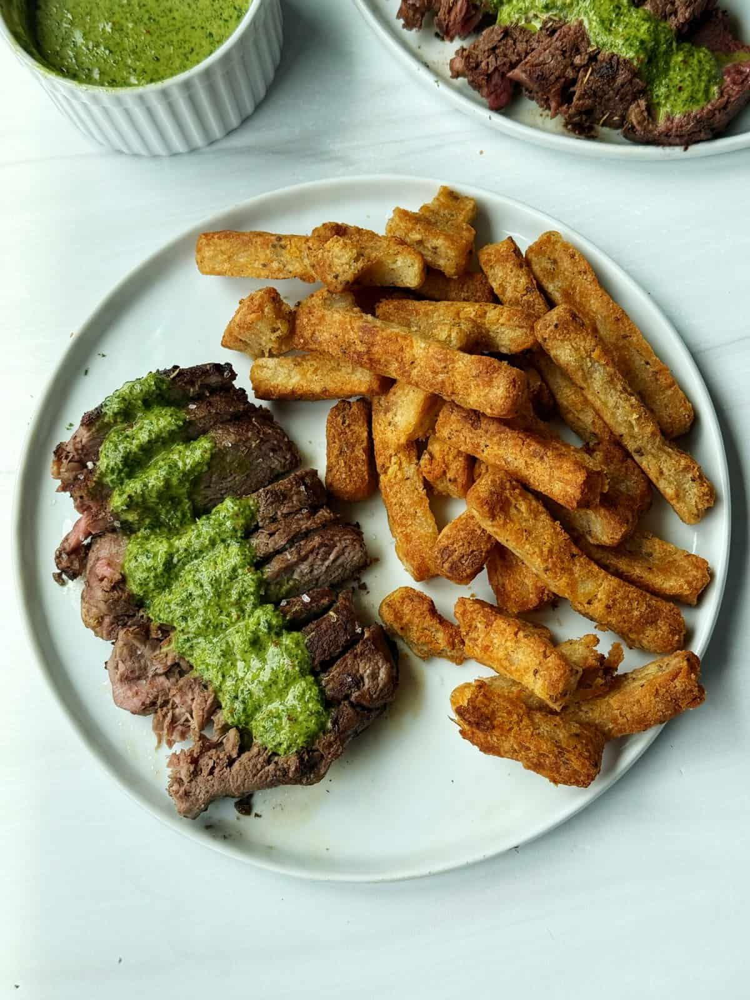

Home
Steak Frites

Description
The Steak Frites is a classic, filling meal that combines a juicy pan-seared steak with a
generous side of crispy French fries. It is well known for being simple, flavorful, and always satisfying.
Whether you keep it basic with just salt and pepper or add your favorite sauce, it is an easy go-to dish for any meal.
It is an effortless crowd-pleaser for any occasion.
Ingredients
- Steak. Two good-sized cuts (like ribeye, sirloin, or strip steak), about 1 inch thick.
- Potatoes. Two or three large russet or Yukon gold potatoes, cut into fries.
- Cooking oil. Enough vegetable oil for frying, plus a tablespoon of olive oil for the steak.
- Butter and garlic (optional). A couple of tablespoons of butter and two crushed garlic cloves for extra flavor.
- Salt and pepper. Himalayan salt and black pepper to season both the meat and the fries.
Steps
- Prep and fry the potatoes. Cut the potatoes into thin strips and pat them dry with a paper towel.
Fry them in hot oil until golden and crispy, then drain on paper towels and season with salt right away.
- Season the steak. Pat the steaks dry and season both sides generously with salt and black pepper.
- Cook the steak. Heat a tablespoon of oil in a skillet over high heat. Sear the steaks for about 3 to 4 minutes per side,
depending on how well-done you like them.
- Add flavor and rest. Turn the heat down, add the butter and garlic to the pan, and spoon the melted butter over the steaks for a minute.
Take the steaks out and let them rest for 5 minutes before serving alongside the fries..
See also